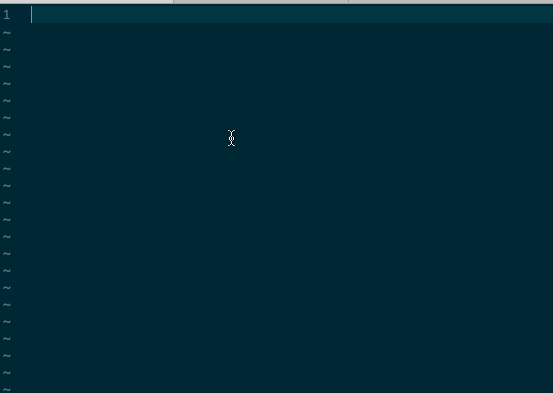

VIM 插件管理工具 vim-plug 简明教程
作为 VIM 的重度患者, 一款好用的插件管理工具显得尤为重要, 毕竟给 VIM 增加新功能, 或者是新增编程语言的支持都需要安装插件. 我个人目前安装了 133 款 VIM 插件.
我使用的 VIM 插件管理工具也从早起的 Vundle 到 NeoBundle, 再到现在使用的 vim-plug.
选择 vim-plug , 是因为它:
- 简洁且快速, 没有外部依赖, 整个插件只有一个文件;
- 该有的功能都有:
- 按需加载插件(On-demand loading); 这样可以加快 VIM 启动时间
- Post-update hooks; 可以在插件安装或者更新时执行一些操作, 如 make 等
- 还提供了更高阶的功能, 使得安装或更新插件都更快速:
- 并行化地安装或者更新插件;
- 按照 shallow 的方式 clone 插件库, 下载更迅速
本文是 vim-plug 的一个简明教程, 会介绍它的安装使用, 以及我个人用到的一些 tips.
安装
官网是把 vim-plug 安装在 vim 的默认目录 ~/.vim 中, 但我个人更喜欢把它放在一个特定的位置, 这样不管是 vim 还是 neovim 都可以正常的加载它.
下面是 linux/macOS/unix 中直接在 vimrc 中安装 vim-plug 的代码:
let $BUNDLE = expand("$HOME/.dotfiles/data/vimdata/bundle") |
这段代码的意思是如果 vim-plug.vim 文件不存在, 就自动从 github 上下载最新版本到指定目录并加载.
使用
和大部分 vim 插件管理工具一样, vim-plug 需要一个 begin 和 end 函数, 同时在 begin 和 end 中间可以使用 Plug plugin_url 来加载插件, 例如:
call plug#begin(expand($BUNDLE)) |
把上面这部分代码放在上一步代码后面, 重新加载 vimrc source ~/.vimrc, 然后我们就可以使用 :PlugInstall ProjectConfig 来安装 ProjectConfig 插件了. 安装完成后, 我们可以通过执行 :ProjectConfig 来检查插件是否成功安装.
和 :PlugInstall 类似, 我们可以使用 PlugUpdate 来更新插件.
通过按键来安装或更新插件
通过命令安装或者更新插件显得很繁琐, 我们期望通过快捷键可以实现下面的效果:
- 当光标所在行是以
Plug开始时, 我们可以直接按快捷键来安装或更新这个Plug命令加载的插件; - 当光标所在行不是以
Plug开始时, 按相同的按键, 我们会安装所有当前未安装的插件, 或者更新所有插件;
可以通过下面的代码实现我们想要的效果:
function! GetPlugNameFronCurrentLine(cmd) |
当我们按 ,pi 时便可安装光标所在行的插件, 或者是按 ,pu 来更新光标所在行的插件.
按需加载插件
为了提高 vim 的启动速度, 我们期望某些插件只有在特定的情况下才被加载. 例如我们希望 vim-go 插件只有在编辑 go 类型的文件时才会被打开, 便可以通过如下方法实现:
Plug 'https://github.com/fatih/vim-go.git', {'for': 'go'} |
其中 for 后面的文件类型也可以使用列表, 如 {'for': ['go', 'golang']} .
同时, 也可以在调用命令的时候加载插件, 如:
Plug 'https://github.com/Yggdroot/indentLine', {'on' : 'IndentLinesToggle'} |
这段代码的意思是只有 IndentLinesToggle 被调用时, 对应的插件才会被加载. on 后面也可以使用列表.
手动加载插件
有时我们需要手动加载一些在 vim 启动时未被加载的插件, 例如我们可能希望在没打开 go 类型文件的情况下查看 vim-go 的帮助文档, 这时我们可以通过如下的自定义命令来加载 vim-go :
function! s:plug_loaded(spec) |
在 vimrc 中加入上述代码后, 我们便可通过 :PlugLoad vim-go 来加载 vim-go 这个插件. PlugLoad 命令可以自动补全当前未加载的插件.
Post-update Hooks
我们可以通过 do 标签来指定在安装或者更新完插件后所需要做的操作:
Plug 'https://github.com/autozimu/LanguageClient-neovim', { 'do': ':UpdateRemotePlugins' } |
Tip: 基于 Ultisnip 快速补全 plug 命令
往往我们在安装插件的时候会先把插件的地址复制到系统剪贴板中, 假定当前系统剪贴板的内容为 https://github.com/hiberabyss/ProjectConfig 借助 Ultisnip 的自动补全功能, 我们可以实现如下的效果:

在 vim.snippets 中添加如下代码即可实现上面的效果:
snippet plug "add new plugin" b |
推荐阅读
- 本文链接：https://hiberabyss.github.io/2018/03/21/vim-plug-introduction/
- 版权声明：本博客所有文章除特别声明外，均采用 CC BY-NC-SA 3.0 CN 许可协议。转载请注明出处！